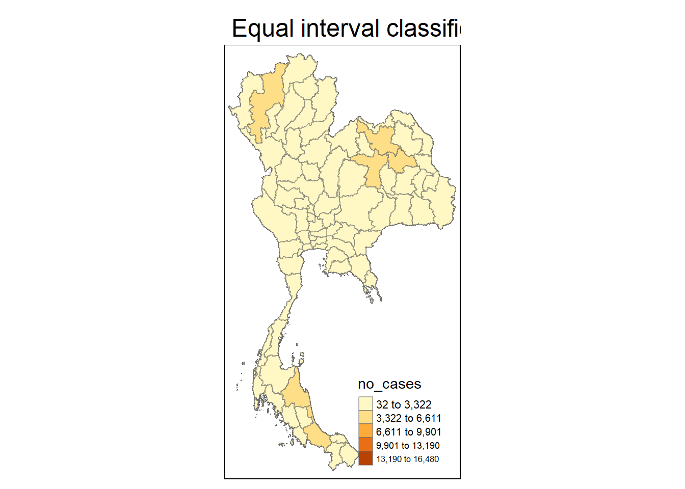
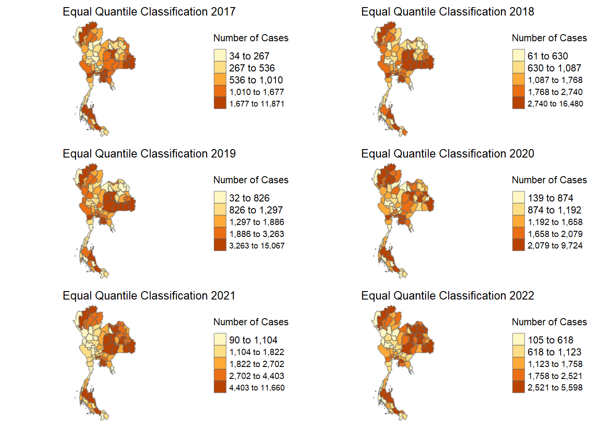
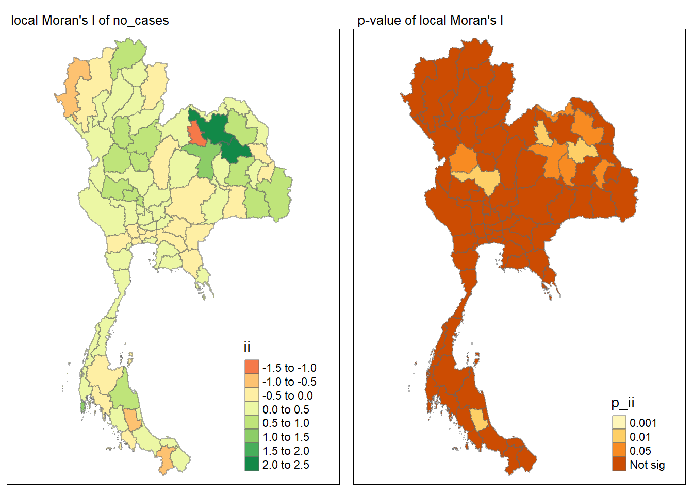
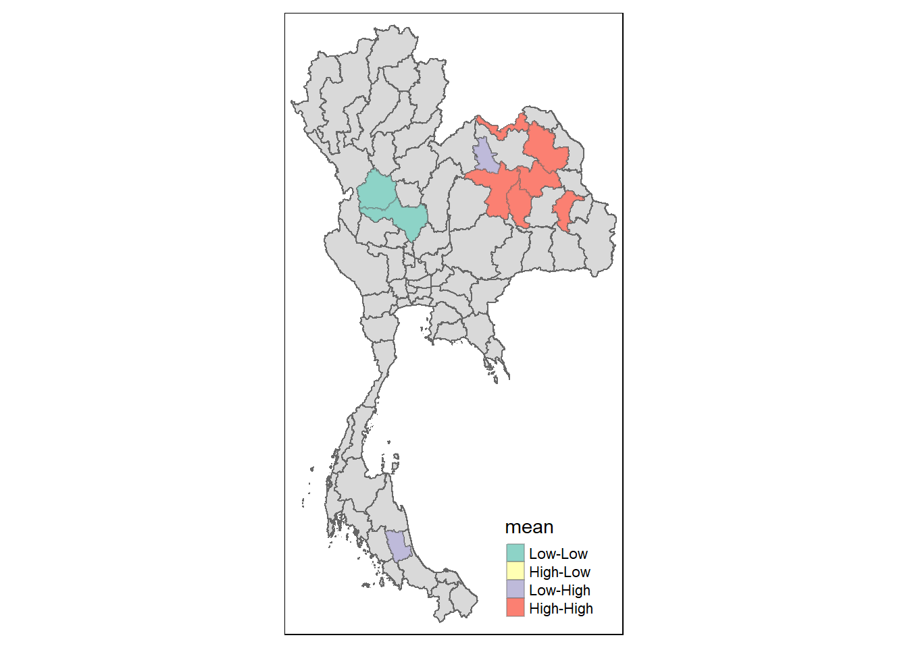
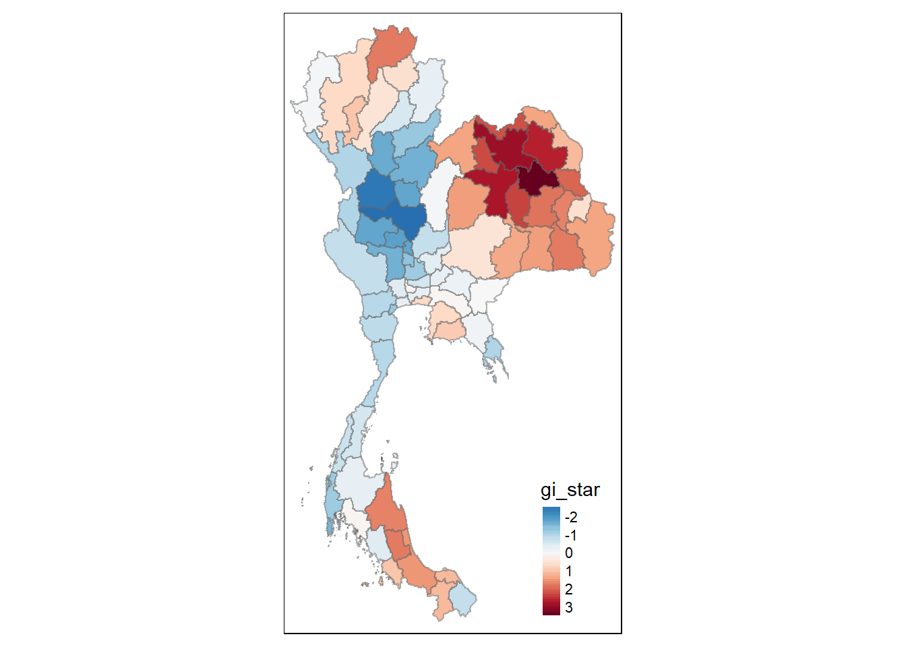
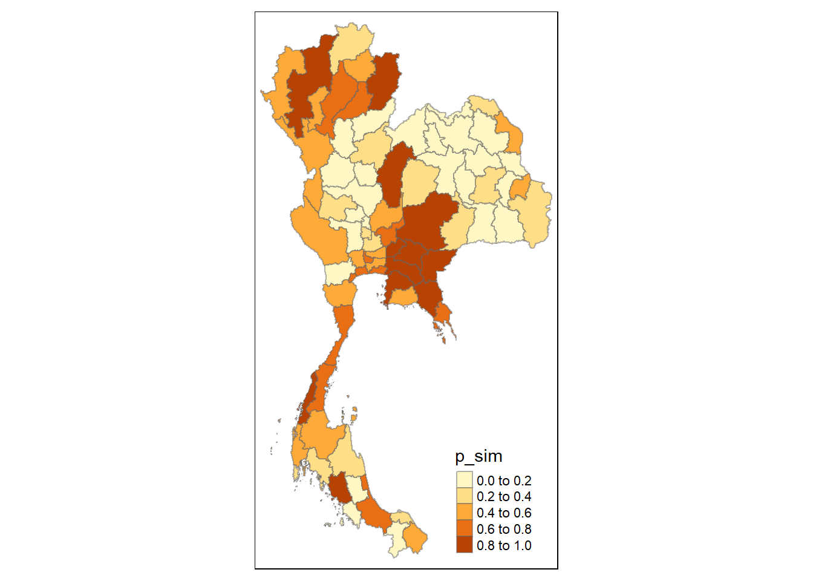
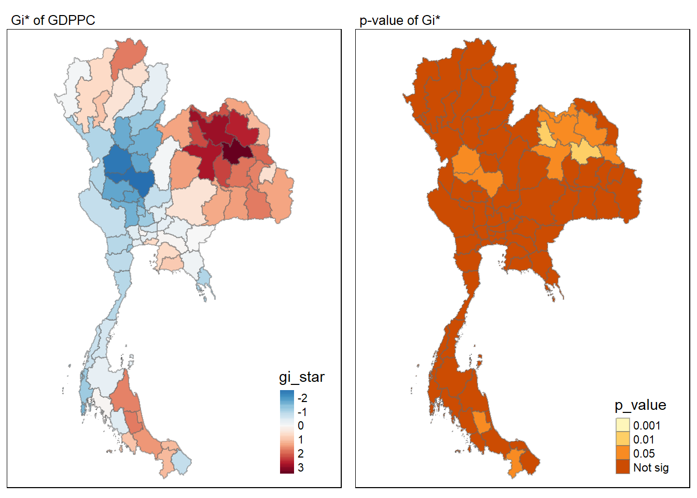
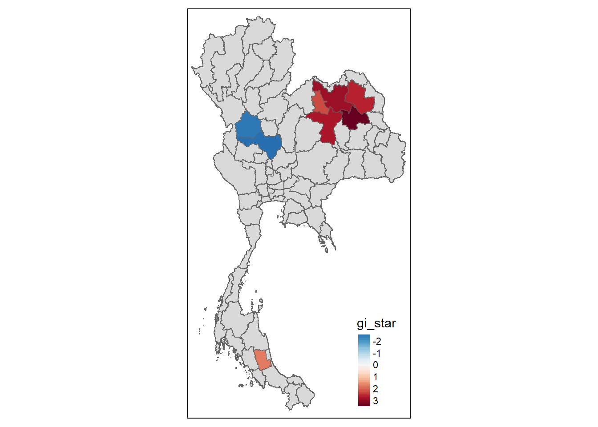
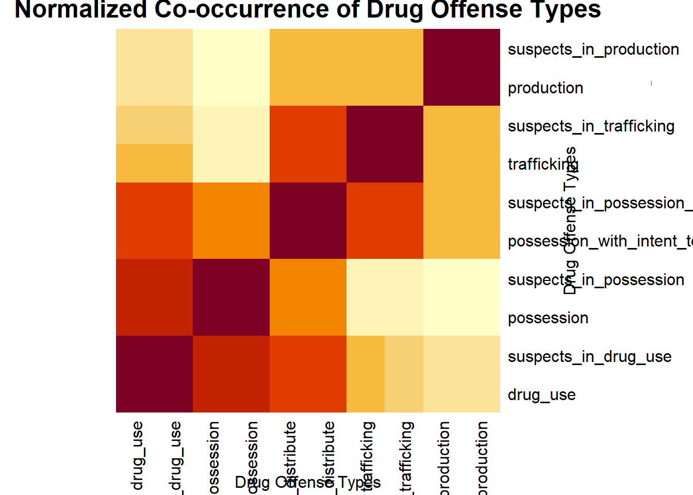
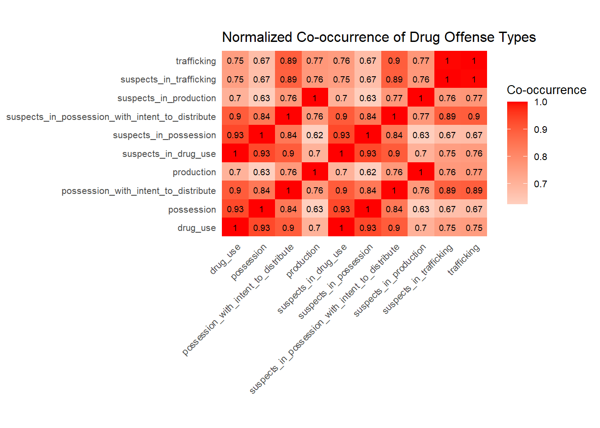

pacman:: p_load(sf, tmap, tidyverse, sfdep,spdep)Takehome 2
Introduction : Drug Abuse in Thailand
Drug abuse and trafficking in Thailand present a complex and evolving challenge that demands rigorous research and analysis. This study focuses on Thailand due to its unique position in the global drug trade and its recent policy shifts, offering valuable insights into the spatial and temporal dynamics of drug issues in Southeast Asia. Thailand’s proximity to the Golden Triangle, the largest drug production site in Asia, coupled with its developing transportation infrastructure, has positioned the country as both a significant market and a crucial transit route for illicit substances. The COVID-19 pandemic and its aftermath have added new dimensions to this landscape, as drug syndicates rapidly adapted their operations to changing circumstances. Our research aims to examine whether key indicators of drug abuse in Thailand are independent of spatial factors, while also exploring the temporal aspects of drug trends. By analyzing data on drug prevalence, pricing, distribution methods, and law enforcement efforts over recent years, we seek to uncover patterns that may inform more effective policies and interventions. The study considers these two of critical factors:
The effects of major events, such as the COVID-19 pandemic, on drug trafficking and consumption
The consequences of recent legislative changes, including the 2021 Narcotics Code and the 2022 Kratom Plant Act
By examining these elements, we hope to contribute to a more nuanced understanding of drug issues in Thailand, potentially revealing insights that could be applicable to other regions facing similar challenges. This research is particularly timely as Thailand, like many countries, grapples with the post-pandemic resurgence of drug activities and seeks innovative approaches to address this persistent social and public health concern.
drug_offenses <- read_csv("data/aspatial/thai_drug_offenses_2017_2022.csv") %>%
filter(types_of_drug_offenses == "drug_use_cases")Rows: 7392 Columns: 5
── Column specification ────────────────────────────────────────────────────────
Delimiter: ","
chr (3): types_of_drug_offenses, province_th, province_en
dbl (2): fiscal_year, no_cases
ℹ Use `spec()` to retrieve the full column specification for this data.
ℹ Specify the column types or set `show_col_types = FALSE` to quiet this message.drug_offenses <- drug_offenses %>%
mutate(province_en = case_when(
province_en == "buogkan" ~ "Bueng Kan",
province_en == "Loburi" ~ "Lop Buri",
TRUE ~ province_en
))adm1 <- st_read("data/geospatial/tha_adm_rtsd_itos_20210121_shp", layer = "tha_admbnda_adm1_rtsd_20220121")Reading layer `tha_admbnda_adm1_rtsd_20220121' from data source
`C:\Users\yapho\Documents\SMU\smu y4\is415\hxyap_IS415\takehome\ex2\data\geospatial\tha_adm_rtsd_itos_20210121_shp'
using driver `ESRI Shapefile'
Simple feature collection with 77 features and 16 fields
Geometry type: MULTIPOLYGON
Dimension: XY
Bounding box: xmin: 97.34336 ymin: 5.613038 xmax: 105.637 ymax: 20.46507
Geodetic CRS: WGS 84drug_offenses_filtered <- drug_offenses %>% select(-province_th)
adm1_filtered <- adm1 %>% select(-ADM1_TH, -ADM1ALT1TH, -ADM1ALT2TH, -ADM0_TH)jointable <- left_join(drug_offenses_filtered, adm1_filtered, by = c("province_en" = "ADM1_EN"))summary(jointable) fiscal_year types_of_drug_offenses no_cases province_en
Min. :2017 Length:462 Min. : 32.0 Length:462
1st Qu.:2018 Class :character 1st Qu.: 798.2 Class :character
Median :2020 Mode :character Median : 1403.5 Mode :character
Mean :2020 Mean : 1981.7
3rd Qu.:2021 3rd Qu.: 2440.2
Max. :2022 Max. :16480.0
Shape_Leng Shape_Area ADM1_PCODE ADM1_REF
Min. : 1.024 Min. :0.03458 Length:462 Length:462
1st Qu.: 4.163 1st Qu.:0.29209 Class :character Class :character
Median : 5.463 Median :0.47344 Mode :character Mode :character
Mean : 5.726 Mean :0.56368
3rd Qu.: 7.200 3rd Qu.:0.80197
Max. :13.777 Max. :1.90055
ADM1ALT1EN ADM1ALT2EN ADM0_EN ADM0_PCODE
Length:462 Length:462 Length:462 Length:462
Class :character Class :character Class :character Class :character
Mode :character Mode :character Mode :character Mode :character
date validOn validTo
Min. :2019-02-18 Min. :2022-01-22 Min. :-001-11-30
1st Qu.:2019-02-18 1st Qu.:2022-01-22 1st Qu.:-001-11-30
Median :2019-02-18 Median :2022-01-22 Median :-001-11-30
Mean :2019-02-18 Mean :2022-01-22 Mean :-001-11-30
3rd Qu.:2019-02-18 3rd Qu.:2022-01-22 3rd Qu.:-001-11-30
Max. :2019-02-18 Max. :2022-01-22 Max. :-001-11-30
geometry
MULTIPOLYGON :462
epsg:4326 : 0
+proj=long...: 0
drugoff_sf <- st_as_sf(jointable)
# Set the CRS to match adm1
st_crs(drugoff_sf) <- st_crs(adm1)
# Verify the CRS
print(st_crs(drugoff_sf))Coordinate Reference System:
User input: WGS 84
wkt:
GEOGCRS["WGS 84",
DATUM["World Geodetic System 1984",
ELLIPSOID["WGS 84",6378137,298.257223563,
LENGTHUNIT["metre",1]]],
PRIMEM["Greenwich",0,
ANGLEUNIT["degree",0.0174532925199433]],
CS[ellipsoidal,2],
AXIS["latitude",north,
ORDER[1],
ANGLEUNIT["degree",0.0174532925199433]],
AXIS["longitude",east,
ORDER[2],
ANGLEUNIT["degree",0.0174532925199433]],
ID["EPSG",4326]]# Check the class of the geometry column
print(class(drugoff_sf$geometry))[1] "sfc_MULTIPOLYGON" "sfc" tmap_mode("plot")tmap mode set to plottingplots <- list()
for (i in 2017:2022){
p <- drugoff_sf %>%
filter(fiscal_year == i) %>%
tm_shape() +
tm_polygons("no_cases")
plots[[paste0("plot", i)]] <- p
}drugoff_list <- split(drugoff_sf, drugoff_sf$fiscal_year) tm_shape(drugoff_sf) +
tm_fill("no_cases",
n = 5,
style = "equal") +
tm_borders(alpha = 0.5) +
tm_layout(main.title = "Equal interval classification")Some legend labels were too wide. These labels have been resized to 0.61, 0.61, 0.56, 0.52. Increase legend.width (argument of tm_layout) to make the legend wider and therefore the labels larger.
tm_shape(drugoff_sf) +
tm_fill("no_cases",
n = 5,
style = "quantile") +
tm_borders(alpha = 0.5) +
tm_layout(main.title = "Equal quantile classification")Some legend labels were too wide. These labels have been resized to 0.61, 0.61, 0.56. Increase legend.width (argument of tm_layout) to make the legend wider and therefore the labels larger.
As we can see from the equal intervals, our data is pretty skewed. Thus, we shall turn to equal quantiles to have a better visualization. With the right, we can see that actually it’s only some regions that have a lot of cases, and those that do, have far more than regions than don’t. revealing that our data is very skewed on a region by region basis. From this, we should look at southern and also northeast Thailand. A possible hypothesis is that the main distribution network for the Golden Triangle is located in Northeastern Thailand, with easy links to drug production and trafficking routes from Myanmar and Laos, with a secondary distribution network in Southern Thailand, allowing for potential distribution to more southerly regions, or suggesting maritime connections to the rest of Southeast Asia like Malaysia/ Indonesia.
tmap_mode("plot")tmap mode set to plottingplot_list <- list()
# Loop through the drugoff_list and create each year's plot, storing them in plot_list
for (year in names(drugoff_list)) {
p <- tm_shape(drugoff_list[[year]]) +
tm_fill("no_cases",
n = 5,
style = "quantile",
title = "Number of Cases") + # Set legend title
tm_borders(alpha = 0.5) +
tm_layout(main.title = paste("Equal Quantile Classification", year),
main.title.size = 0.8, # Adjust the title size
main.title.position = c("center", "top"), # Center the title
frame = FALSE, # Remove the frame around the plot
legend.outside = TRUE, # Place the legend outside the plot
legend.outside.position = "right")
# Store the plot in the list
plot_list[[year]] <- p
}
# Arrange the plots in a 2x3 layout
tmap_arrange(plotlist = plot_list, ncol = 2, nrow = 3)Some legend labels were too wide. These labels have been resized to 0.59, 0.54. Increase legend.width (argument of tm_layout) to make the legend wider and therefore the labels larger.Some legend labels were too wide. These labels have been resized to 0.59, 0.59, 0.54. Increase legend.width (argument of tm_layout) to make the legend wider and therefore the labels larger.
Some legend labels were too wide. These labels have been resized to 0.59, 0.59, 0.54. Increase legend.width (argument of tm_layout) to make the legend wider and therefore the labels larger.Some legend labels were too wide. These labels have been resized to 0.59, 0.59, 0.59. Increase legend.width (argument of tm_layout) to make the legend wider and therefore the labels larger.Some legend labels were too wide. These labels have been resized to 0.59, 0.59, 0.59, 0.54. Increase legend.width (argument of tm_layout) to make the legend wider and therefore the labels larger.Some legend labels were too wide. These labels have been resized to 0.59, 0.59, 0.59. Increase legend.width (argument of tm_layout) to make the legend wider and therefore the labels larger.
#tm_shape(adm1_filtered) + tm_polygons() + tm_shape(ports) + tm_dots(size = 0.1)1.0 Analyzing the impact of the Drug Offenses Act
We will be looking into 2022 as it is the year after the 2021 drug offenses act was passed.
drugoff_list[[6]]Simple feature collection with 77 features and 15 fields
Geometry type: MULTIPOLYGON
Dimension: XY
Bounding box: xmin: 97.34336 ymin: 5.613038 xmax: 105.637 ymax: 20.46507
Geodetic CRS: WGS 84
# A tibble: 77 × 16
fiscal_year types_of_drug_offenses no_cases province_en Shape_Leng Shape_Area
<dbl> <chr> <dbl> <chr> <dbl> <dbl>
1 2022 drug_use_cases 168 Krabi 8.21 0.409
2 2022 drug_use_cases 2755 Bangkok 2.42 0.131
3 2022 drug_use_cases 1476 Kanchanabu… 8.23 1.63
4 2022 drug_use_cases 3753 Kalasin 6.05 0.583
5 2022 drug_use_cases 623 Kamphaeng … 5.19 0.724
6 2022 drug_use_cases 3968 Khon Kaen 8.99 0.898
7 2022 drug_use_cases 1207 Chanthaburi 5.13 0.533
8 2022 drug_use_cases 1502 Chachoengs… 4.94 0.431
9 2022 drug_use_cases 2930 Chon Buri 6.09 0.376
10 2022 drug_use_cases 617 Chai Nat 2.90 0.209
# ℹ 67 more rows
# ℹ 10 more variables: ADM1_PCODE <chr>, ADM1_REF <chr>, ADM1ALT1EN <chr>,
# ADM1ALT2EN <chr>, ADM0_EN <chr>, ADM0_PCODE <chr>, date <date>,
# validOn <date>, validTo <date>, geometry <MULTIPOLYGON [°]># Generate neighbors list
wm_q_druguse22 <- drugoff_list[[6]] %>%
mutate(nb = st_contiguity(geometry))
# Manually modify the empty neighbor set
# Suppose the empty neighbor set is at index 'empty_index' and its nearest neighbor is at index 'nearest_index'
empty_index <- 42 # Index of the geometry with the empty neighbor set
nearest_index <- 35 # Index of the nearest neighbor
# Manually add the nearest neighbor to the empty set
wm_q_druguse22$nb[[empty_index]] <- as.integer(nearest_index)
# Now, calculate the weights after modifying the neighbor list
wm_q_DUC22 <- wm_q_druguse22 %>%
mutate(wt = st_weights(nb, style = "W"),
.before = 1)1.1.1 Global Measures of Spatial Autocorrelation: Moran’s I
Moran’s I is a global measure of spatial autocorrelation that helps determine whether similar values cluster together in space (positive spatial autocorrelation), disperse (negative spatial autocorrelation), or are randomly distributed. The statistic ranges from -1 to +1:
Values close to +1 indicate strong positive spatial autocorrelation (clustering)
Values close to -1 indicate strong negative spatial autocorrelation (dispersion)
Values near 0 suggest random spatial distribution
By using Moran’s I, we can determine if the number of drug cases across Thailand’s regions are spatially correlated. This will reveal if high (or low) case numbers tend to cluster together geographically. Let’s perform a simple Moran’s and then a monte-carlo sim to check our claim stands:
moranI_DUC22 <- global_moran(wm_q_DUC22$no_cases, wm_q_DUC22$nb, wm_q_DUC22$wt)
glimpse(moranI_DUC22)List of 2
$ I: num 0.213
$ K: num 3.88global_moran_test(wm_q_DUC22$no_cases, wm_q_DUC22$nb, wm_q_DUC22$wt)
Moran I test under randomisation
data: x
weights: listw
Moran I statistic standard deviate = 2.9643, p-value = 0.001517
alternative hypothesis: greater
sample estimates:
Moran I statistic Expectation Variance
0.213305190 -0.013157895 0.005836395 set seed
set.seed(42069)global_moran <- global_moran_perm(wm_q_DUC22$no_cases, wm_q_DUC22$nb, wm_q_DUC22$wt, nsim = 99)
global_moran
Monte-Carlo simulation of Moran I
data: x
weights: listw
number of simulations + 1: 100
statistic = 0.21331, observed rank = 100, p-value < 2.2e-16
alternative hypothesis: two.sidedBased off our Moran’s test as well as our simulations, we can deduce that:
Since our Moran’s value is positive (>0 ) but only moderately, there is evidence for a moderate positive spatial autocorrelation, meaning that similar values tend to cluster together in space more than would be expected by chance.
These results are both statistically significant with both having very small p-values that are definitely <0.05.
This is further supported by the simulation, as the observed rank of 100 out of 100 simulations means that the observed Moran’s I value was higher than all simulated values under the null hypothesis of no spatial autocorrelation.
2.0 Local Measures
We will now confirm this with local measures.
lisa_DUC22 <- wm_q_DUC22 %>%
mutate(local_moran = local_moran(no_cases, nb, wt, nsim = 99),
.before = 1) %>%
unnest(local_moran)tmap_mode("plot")tmap mode set to plottingmap1 <- tm_shape(lisa_DUC22) +
tm_fill("ii") +
tm_borders(alpha = 0.5) +
tm_view(set.zoom.limits = c(6,8)) +
tm_layout(main.title = "local Moran's I of no_cases",
main.title.size = 0.8)
map2 <- tm_shape(lisa_DUC22) +
tm_fill("p_ii",
breaks = c(0, 0.001, 0.01, 0.05, 1),
labels = c("0.001", "0.01", "0.05", "Not sig")) +
tm_borders(alpha = 0.5) +
tm_layout(main.title = "p-value of local Moran's I",
main.title.size = 0.8)
tmap_arrange(map1, map2, ncol = 2)Variable(s) "ii" contains positive and negative values, so midpoint is set to 0. Set midpoint = NA to show the full spectrum of the color palette.
lisa_sig_DUC22 <- lisa_DUC22 %>%
filter(p_ii < 0.05)
tmap_mode("plot")tmap mode set to plottingtm_shape(lisa_DUC22) +
tm_polygons() +
tm_borders(alpha = 0.5) +
tm_shape(lisa_sig_DUC22) +
tm_fill("mean") +
tm_borders(alpha = 0.4)Warning: One tm layer group has duplicated layer types, which are omitted. To
draw multiple layers of the same type, use multiple layer groups (i.e. specify
tm_shape prior to each of them).
wm_idw_DUC22 <- wm_q_druguse22 %>%
mutate(wts = st_inverse_distance(nb, geometry,
scale = 1,
alpha = 1),
.before = 1)! Polygon provided. Using point on surface.Warning: There was 1 warning in `stopifnot()`.
ℹ In argument: `wts = st_inverse_distance(nb, geometry, scale = 1, alpha = 1)`.
Caused by warning in `st_point_on_surface.sfc()`:
! st_point_on_surface may not give correct results for longitude/latitude dataHotColdSpotAnalysis_DUC22 <- wm_idw_DUC22 %>%
mutate(local_Gi = local_gstar_perm(
no_cases, nb, wt, nsim = 99),
.before = 1) %>%
unnest(local_Gi)
HotColdSpotAnalysis_DUC22Simple feature collection with 77 features and 27 fields
Geometry type: MULTIPOLYGON
Dimension: XY
Bounding box: xmin: 97.34336 ymin: 5.613038 xmax: 105.637 ymax: 20.46507
Geodetic CRS: WGS 84
# A tibble: 77 × 28
gi_star cluster e_gi var_gi std_dev p_value p_sim p_folded_sim skewness
<dbl> <fct> <dbl> <dbl> <dbl> <dbl> <dbl> <dbl> <dbl>
1 0.0920 Low 0.0101 0.00000896 1.08 0.279 0.36 0.18 0.207
2 -0.308 High 0.0143 0.0000108 -0.692 0.489 0.58 0.29 0.0198
3 -0.758 Low 0.0130 0.0000110 -0.797 0.425 0.46 0.23 0.448
4 3.42 High 0.0153 0.0000113 2.60 0.00941 0.04 0.02 0.528
5 -2.38 Low 0.0119 0.00000968 -2.35 0.0187 0.04 0.02 0.0345
6 2.80 High 0.0146 0.00000735 2.13 0.0331 0.04 0.02 0.271
7 -0.113 Low 0.0128 0.0000118 -0.0585 0.953 0.98 0.49 0.823
8 0.0844 Low 0.0133 0.00000990 -0.0120 0.990 1 0.5 0.533
9 0.679 High 0.0154 0.0000144 0.155 0.877 0.84 0.42 0.464
10 -1.77 Low 0.0120 0.0000132 -1.62 0.105 0.08 0.04 0.449
# ℹ 67 more rows
# ℹ 19 more variables: kurtosis <dbl>, wts <list>, fiscal_year <dbl>,
# types_of_drug_offenses <chr>, no_cases <dbl>, province_en <chr>,
# Shape_Leng <dbl>, Shape_Area <dbl>, ADM1_PCODE <chr>, ADM1_REF <chr>,
# ADM1ALT1EN <chr>, ADM1ALT2EN <chr>, ADM0_EN <chr>, ADM0_PCODE <chr>,
# date <date>, validOn <date>, validTo <date>, geometry <MULTIPOLYGON [°]>,
# nb <nb>tmap_mode("plot")tmap mode set to plottingtm_shape(HotColdSpotAnalysis_DUC22) +
tm_fill("gi_star", palette = "-RdBu", style = "cont") +
tm_borders(alpha = 0.5) +
tm_view(set.zoom.limits = c(6,8))Variable(s) "gi_star" contains positive and negative values, so midpoint is set to 0. Set midpoint = NA to show the full spectrum of the color palette.
tmap_mode("plot")tmap mode set to plottingtm_shape(HotColdSpotAnalysis_DUC22) + tm_fill("p_sim") + tm_borders(alpha = 0.5)
tmap_mode("plot")tmap mode set to plottingmap1 <- tm_shape(HotColdSpotAnalysis_DUC22) +
tm_fill("gi_star", palette = "-RdBu", style = "cont") +
tm_borders(alpha = 0.5) +
tm_view(set.zoom.limits = c(6,8)) +
tm_layout(main.title = "Gi* of GDPPC",
main.title.size = 0.8)
map2 <- tm_shape(HotColdSpotAnalysis_DUC22) +
tm_fill("p_value",
breaks = c(0, 0.001, 0.01, 0.05, 1),
labels = c("0.001", "0.01", "0.05", "Not sig")) +
tm_borders(alpha = 0.5) +
tm_layout(main.title = "p-value of Gi*",
main.title.size = 0.8)
tmap_arrange(map1, map2, ncol = 2)Variable(s) "gi_star" contains positive and negative values, so midpoint is set to 0. Set midpoint = NA to show the full spectrum of the color palette.
HCSA_sig_DUC22 <- HotColdSpotAnalysis_DUC22 %>%
filter(p_sim < 0.05)
tmap_mode("plot")tmap mode set to plottingtm_shape(HotColdSpotAnalysis_DUC22) +
tm_polygons() +
tm_borders(alpha = 0.5) +
tm_shape(HCSA_sig_DUC22) +
tm_fill("gi_star", palette = "-RdBu", style = "cont") +
tm_borders(alpha = 0.4)Warning: One tm layer group has duplicated layer types, which are omitted. To
draw multiple layers of the same type, use multiple layer groups (i.e. specify
tm_shape prior to each of them).Variable(s) "gi_star" contains positive and negative values, so midpoint is set to 0. Set midpoint = NA to show the full spectrum of the color palette.
Interesting. So there is a cold spot here? let’s find their name:
cold_spot <- HotColdSpotAnalysis_DUC22 %>%
filter(p_sim < 0.05) %>%
arrange(gi_star) %>%
slice(1)print(cold_spot$province_en)[1] "Nakhon Sawan"And there we have it! A cursory google search finds us that Nakhon Sawan is home the the central point of where Thailand’s waterways meet to form the Chao Phraya River. It has an army unit stationed there as well as well a large wetland. A possible explanation is that the combination of few people, hard to cross wetlands, as well as not much to be done or lack of foreign activity there means there is little incentive for drug dealers to use that location for much else but drug transit. As drugs are only there in a transitory matter, all the drug cases happen elsewhere in Thailand instead.
We know from previous current knowledge that the northern hotspot can be attributed to the well known Golden Triangle. But then why is there a random hot spot at the south of Thailand?
Let’s find that southern spot:
spots_1_to_2 <- HotColdSpotAnalysis_DUC22 %>%
filter(gi_star >= 1 & gi_star < 2) %>%
filter(p_sim < 0.05) # This ensures the results are statistically significantspots_1_to_2$province_en[1] "Phatthalung"Interesting. A cursory news search (https://www.bernama.com/en/news.php?id=2304082) suggests that this could be due to drug lords making Phattalung, a relatively landlocked state, a possible escapade location due to it’s lack of accessibility (only accessible by rail and land, no airports).
3.0 Bonus
For our bonus, we are going to do some EDA for fun since I ran out of time due to getting hit with food poisoning :)
drug_unf <- read_csv("data/aspatial/thai_drug_offenses_2017_2022.csv")Rows: 7392 Columns: 5
── Column specification ────────────────────────────────────────────────────────
Delimiter: ","
chr (3): types_of_drug_offenses, province_th, province_en
dbl (2): fiscal_year, no_cases
ℹ Use `spec()` to retrieve the full column specification for this data.
ℹ Specify the column types or set `show_col_types = FALSE` to quiet this message.unique_types <- unique(drug_unf$types_of_drug_offenses)
print(unique_types) [1] "drug_use_cases"
[2] "suspects_in_drug_use_cases"
[3] "possession_cases"
[4] "suspects_in_possession_cases"
[5] "possession_with_intent_to_distribute_cases"
[6] "suspects_in_possession_with_intent_to_distribute_cases"
[7] "trafficking_cases"
[8] "suspects_in_trafficking_cases"
[9] "production_cases"
[10] "suspects_in_production_cases"
[11] "import_cases"
[12] "suspects_in_import_cases"
[13] "export_cases"
[14] "suspects_in_export_cases"
[15] "conspiracy_cases"
[16] "suspects_in_conspiracy_cases" head(drug_unf)# A tibble: 6 × 5
fiscal_year types_of_drug_offenses no_cases province_th province_en
<dbl> <chr> <dbl> <chr> <chr>
1 2017 drug_use_cases 11871 กรุงเทพมหานคร Bangkok
2 2017 drug_use_cases 200 ชัยนาท Chai Nat
3 2017 drug_use_cases 553 นนทบุรี Nonthaburi
4 2017 drug_use_cases 450 ปทุมธานี Pathum Thani
5 2017 drug_use_cases 378 พระนครศรีอยุธยา Phra Nakhon Si Ayut…
6 2017 drug_use_cases 727 ลพบุรี Loburi # Step 1: Filter data for 2022, remove specified case types, and reshape
wide_data <- drug_unf %>%
filter(fiscal_year == 2022) %>%
filter(!types_of_drug_offenses %in% c(
"suspects_in_export_cases",
"export_cases",
"suspects_in_import_cases",
"import_cases"
)) %>%
select(province_th, types_of_drug_offenses, no_cases) %>%
pivot_wider(names_from = types_of_drug_offenses, values_from = no_cases, values_fill = 0)library(corrplot)corrplot 0.94 loaded# Step 2: Create co-occurrence matrix
offense_matrix <- as.matrix(wide_data[,-1]) # Exclude the province column
# Step 2.5: Remove "_cases" from column names
colnames(offense_matrix) <- gsub("_cases$", "", colnames(offense_matrix))
# Step 3: Check for columns with zero variance
zero_var_cols <- apply(offense_matrix, 2, var) == 0
if(any(zero_var_cols)) {
print("The following offense types have zero variance and will be removed:")
print(names(zero_var_cols)[zero_var_cols])
offense_matrix <- offense_matrix[, !zero_var_cols]
}[1] "The following offense types have zero variance and will be removed:"
[1] "conspiracy" "suspects_in_conspiracy"co_occurrence <- t(offense_matrix) %*% offense_matrix
# Step 5: Handle NA and Inf values in normalization
diag_values <- diag(co_occurrence)
normalization_factor <- sqrt(diag_values %*% t(diag_values))
# Replace 0 with a small number to avoid division by zero
normalization_factor[normalization_factor == 0] <- 1e-10
co_occurrence_norm <- co_occurrence / normalization_factor# Step 6: Visualize the matrix using base R
heatmap(co_occurrence_norm,
Rowv = NA, Colv = NA,
scale = "none",
main = "Normalized Co-occurrence of Drug Offense Types",
xlab = "Drug Offense Types",
ylab = "Drug Offense Types")
# Add text labels to the heatmap
text(expand.grid(1:ncol(co_occurrence_norm), 1:nrow(co_occurrence_norm)),
labels = round(c(co_occurrence_norm), 2),
cex = 0.7)
Alternatively,
# Step 6: Prepare data for ggplot
melted_corr <- as.data.frame(co_occurrence_norm) %>%
rownames_to_column(var = "Var1") %>%
pivot_longer(cols = -Var1, names_to = "Var2", values_to = "value")
# Step 7: Create heatmap using ggplot2 with adjusted width and smaller text
ggplot(melted_corr, aes(x = Var1, y = Var2, fill = value)) +
geom_tile() +
geom_text(aes(label = round(value, 2)), color = "black", size = 2.5) + # Smaller cell text
scale_fill_gradient2(low = "blue", high = "red", mid = "white", midpoint = 0.5) +
theme_minimal() +
theme(
axis.text.x = element_text(angle = 45, hjust = 1, size = 8), # Smaller x-axis text
axis.text.y = element_text(size = 8), # Smaller y-axis text
axis.title = element_blank(),
plot.title = element_text(size = 12), # Smaller title
legend.title = element_text(size = 10), # Smaller legend title
legend.text = element_text(size = 8), # Smaller legend text
aspect.ratio = 0.7 # This makes the plot wider
) +
labs(title = "Normalized Co-occurrence of Drug Offense Types",
fill = "Co-occurrence") +
scale_x_discrete(expand = c(0, 0)) +
scale_y_discrete(expand = c(0, 0))
# Save the plot with a specific width and height
ggsave("wide_heatmap_small_text.png", width = 12, height = 8, units = "in", dpi = 300)So essentially we can probably just combine/ rename the suspects_in columns with their respective “suspect” less column it seems :/ Cool to know.
We also now know that possession in general has high correlation with drug use cases, but trafficking/production has lower correlation. I think this opens some further questions like:
1) Where are the distribution cases located? Are they peak in the previously seen HCSA/ highlighted Moran’s spots? Is the reason for our weird spots due to distributions?
2) Where is our trafficking cases highlighted? Previously, we can recall a lull in use cases in our favourite spot Nakhon Sawan. Due to its favourable location, is it possible there is a normal amount of trafficking cases there due to it being the centre of the country of sorts?
3) How are the cases connected? Can we map out the drug distribution networks through the general provincial data? We recall network based analysis…
4) Hey, we did the hard work, maybe we can do Hierachial clustering or GWR (Geographically Weighted Regression?
Unfortunately it is 9pm as I write this with an upcoming group meeting, so that will be resolved next time by viewers’ request~
Thanks for reading!